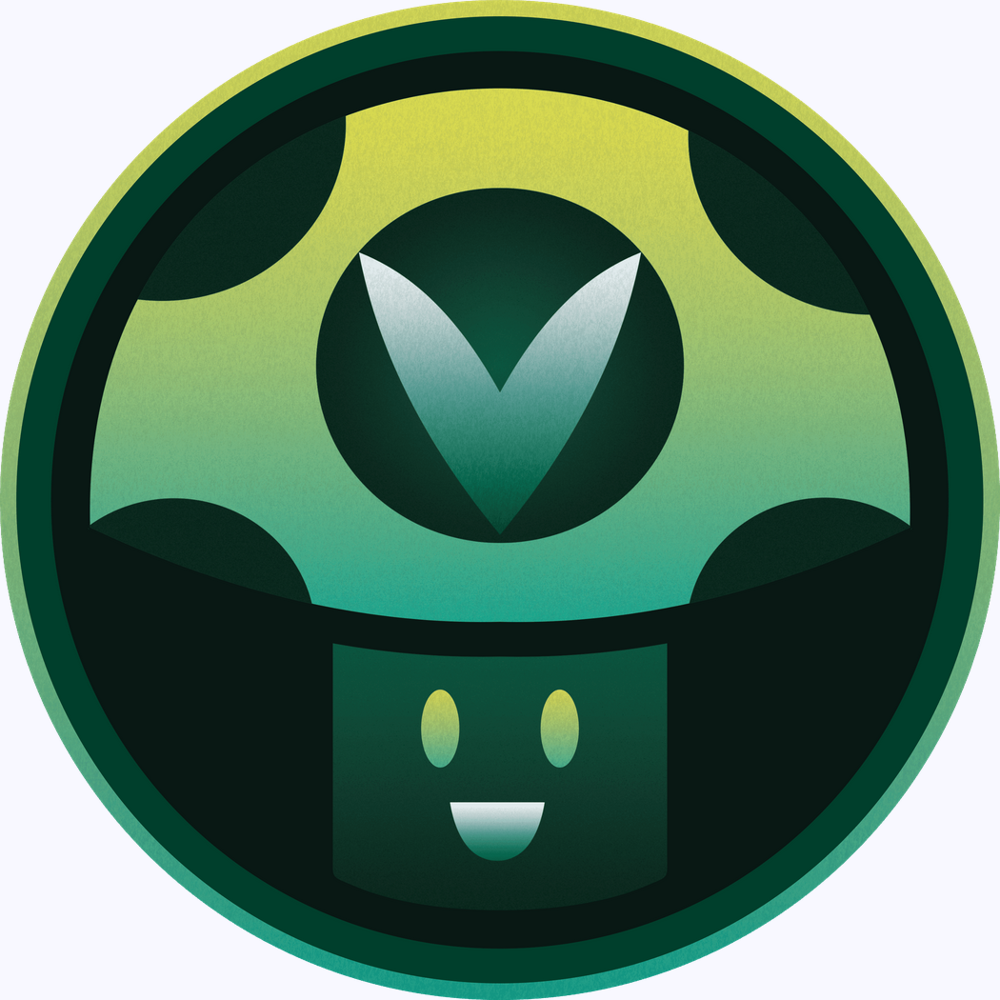

Why Vinesauce is a Great Stream
Welcome to my Vinesauce fan site! I've dedicated this page to Vinesauce because it's my favorite thing to watch on Twitch and YouTube. The two main streamers are funny to watch and have quick and (generally!) witty dialogue that I love so much!
Cool (Random) Facts About Vinesauce
Vinesauce is a team of streamers, but my two favorites are Vinny and Joel. Vinny is the founder of Vinesauce and Joel is a Swedish man with a similar sense of humor and mannerisms to Vinny.